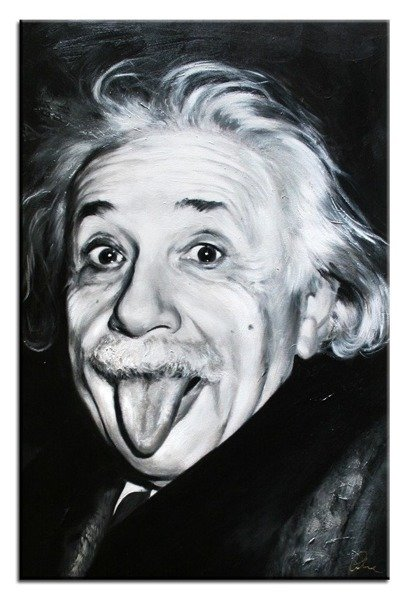

"Cała nasza nauka, w porównaniu z rzeczywistością, jest prymitywna i dziecinna – ale nadal jest
to najcenniejsza rzecz, jaką posiadamy."
Albert Einstein opublikował ponad 300 prac naukowych. Niektóre z nich to:
1905: Szczególna teoria względności, pozwalająca pogodzić względność ruchu z obserwowaną niezależnością
prędkości światła w próżni od obserwatora i zawierająca słynną formułę E=mc²
1907: Kwantowa teoria ciepła właściwego ciała stałego.
"Nie przypuszczam, aby w najbliższej przyszłości filozofia i rozum stały się wyłącznymi przewodnikami człowieka, ale
dla wybranych pozostanie ona najpiękniejszym sanktuarium."